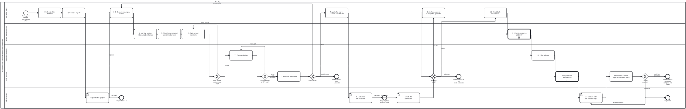

Generated from
cat-harness/skills/kg/graph-management/kg-separation.md— do not edit here.
Knowledge Graph separation — the method
Skill id:
kg-separation· Package:graph-managementProcess:kg-separation.bpmn
Owner, 2026-09-29: “need replicable process for when KG gets too large to
handle and skills”, and on cat-harness: “follow same methodology/house
rules/process”. This is that method. It was written down from what the
bootstrap separation actually did and what went wrong on the way (bean r3gy,
xsqm, and 94 separation beans surveyed), not from a plan.
graph-detanglement is the practice for stages
1–3 (declare in place, detangle, isolate). Read it for those; this skill
points to it and does not restate it. Everything from “split the tools out” to
“the parent’s copy is deleted” is here.
When — the signals, and none of them alone
Separate when the graph is too large to handle, or when a business reason separates it: “split only where consumers or cadences differ”. Size is often not the reason — bootstrap is 33 files and left because its readers and its release cadence differ from cat-harness’s. Record the signals in the bean before deciding:
| signal | how it is measured |
|---|---|
| files and bytes per instance | git ls-files \| cut -d/ -f1 \| sort \| uniq -c |
| clone cost | bun run cat health → repository-size |
| gate time a content change pays | bun run cat gates (the gate count and wall time) |
| merge contention | commits per day on main; PRs re-conflicted before merge |
| cohesion and cut of the candidate | bun run cat kg:detangle |
| wrong-direction edges within one instance — modules bucketed into the proposed repos by path rule | check:partition (its root is ONE instance; read the scope it prints) |
wrong-direction edges between instances — checked against each one’s declared needs | bun run cat kg:detangle:direction, blocking in CI (bean p11x) |
| wrong-direction references — the prose axis, not the import axis | check:reference-direction |
| what the tools would drag along | the import cone of the would-be tools package (check:tools-closure once it exists) |
Preconditions — each was learned from a failure
- Names agree before the cut — directory, declared
name, package name. A rename after the cut is a cross-repository change. - One directory per instance, so extraction is one move, not a sift.
- Every gate that guards the boundary has been watched failing — plant a
violation, see it red, remove it. Four boundary gates in this repository
passed while guarding nothing (
4j3hcould not fail,q2wncould not see side-effect imports,p11xcould not see across instances,ymsuwas repaired before it ran). - The owner’s decisions are recorded in the bean (the table below).
- “Generated output is the contract” is written down (
319n): what crosses the boundary is the generated file, and any tool may produce it.
The pair: a content repository and a tools repository
A separated Knowledge Graph is two repositories, not one.
content (<name>) | tools (<name>-tools) | |
|---|---|---|
| holds | files to read — .md, .json, .bpmn, generated schemas, READMEs, diagrams | the code that writes and checks the content — Zod sources, generators, README/diagram writers, content checks |
| code | none (FR-7 — a reader needs nothing installed) | yes, with a declared, minimal dependency set |
| depends on | nothing | the content, and nothing above it — check:tools-closure |
| is used by | the parent harness, pinned | the content’s own checks, and the parent (a package) |
Owner rulings that make the pattern (2026-09-29, bean xsqm):
- The Zod source moves DOWN into the tools repository — not up into the harness. Zod in the harness makes a content release wait on the harness, which itself needs the content: a cycle.
- The tools repository owns the content checks AND the README and diagram writers — one copy, which the parent harness also calls. It is not a second harness: a content Knowledge Graph declares no visualisers. It is one toolset over swappable content — “someone wants a different visualizer they can use different toolset”.
- Every tool is a script an agent runs as the actor in a process step. Agentic first. A GitHub Actions workflow may be described, but ships disabled, and nothing that costs money runs unless the owner asks.
- Harness output ABOUT the content stays with the harness (hosted): its
QA verdicts (
kgQaHomeFor), translation templates (translationsHomeFor), exported graph and glossary ledger. The content repository carries only what its own checks need.
Staged content with no tools repository yet — the finding, not the silence
An instance can be planned as a content repository before its -tools pair
is authorised (the IRIS replica, 2026-09-30). Declare it — separation: "content" in
<name>.json; the content half of an existing pair is read from the tools
instance’s supports and needs nothing — and kg:audit’s
content-instance-holds-code records a finding naming every code file still
inside it. It is a minor QA warning, not a failure, by owner ruling
(2026-10-01: “QA warning. not failure.. ok b/c small # tools”): the owner
tolerates the code for now (IRIS-specific tools may stay in the IRIS replica for now),
and the warrant is that the tolerated set is small. It was major until then,
on the argument that FR-7 has no legitimate exceptions. A warning still names
each file, so the violation is never silent. The remedy splits by what
the code is: generic code (it works for any instance of its kind — any
DSpace catalogue, any PDF) moves into the platform and takes the instance root
as an argument; instance-specific code waits for <name>-tools. Bean
eayu.
The stages
Each stage names its lane (a role in cat-harness/scenarios/roles.json) and
the command that gates it. A stage is done when its gate is green, never when
the work looks finished.
| # | stage | lane | gate |
|---|---|---|---|
| 0 | Brief, measure the signals, claim | authoring-agent | signals in the bean; bun run cat beans:claim <id> |
| 1–3 | Declare in place, detangle, isolate | authoring-agent | graph-detanglement — all its gates |
| 4 | Identity: name, version, iriBase, needs, nodeSchemas in the declaration; move the base once | platform-authoring-agent | iri:sync -- --from <old base> then iri:sync:check; check:node-iris |
| 5 | Hosted outputs out of the content | platform-authoring-agent | the content leak test’s pending list is empty |
| 6 | Split content from tools: create <name>-tools/ as a sibling, move the code, cut its import cone | platform-authoring-agent | FR-7 (content holds no code); check:tools-closure; generated files byte-identical before and after |
| 7 | Publication plan: every identifier the content mints is a file some step publishes, at /<version>/ and /v<major>/ | publication-manager | check:node-iris; the site layout in instance-publication §”The release site” |
| 8 | Rehearse standalone: copy content + tools alone into a temporary directory and run the tools’ checks there | build-pipeline | green with nothing else on the path; an empty tree exits non-zero |
| 9 | Authorise — report what moves, sizes, what breaks, and wait | administrator | the owner’s answer (deletion-requires-confirmation) |
| 10 | Seed: the owner creates the repositories; once the source has settled, seed main, then the content and tools as reviewed PRs, with history | administrator, then authoring-agent | bun run cat seed:ready --layer <name> --rehearse answers settled for each layer, at seed time; then the seeding PRs reviewed and green |
| 11 | Parent consumes, additively: pin (a SHA while staging, a version once released), repoint imports, keep the parent’s copy. After any move of files between the pair, run the post-move sweep first (below) | platform-authoring-agent | the parent green with the dependency declared; check:published-refs; every gate in the sweep table |
| 12 | First release: tag, publish /<version>/ and /v<major>/ | publication-manager | check:version-bump; every identifier dereferences (publish-verification) |
| 13 | Cutover: the one commit retiring the parent’s copy into fsh-guts as a verified archive (the deposit state:seed --cutover makes: it must extract to the exact tree removed, with a provenance note), deposited into the PARENT’s fsh-guts before the removal, frozen, never refreshed or rendered: a relocation, not a deletion (owner, 2026-10-06; sub-kg-lifecycle stage 13 has the steps) | administrator | only after 11 and 12 are green; DONE only when bun run cat separation:cutover:check --site, run in the separated repository, exits 0 (Tool separation-cutover-check: mounts, declarations resolve, no monorepo wiring, layer direction, the site builds from the mounts alone) |
| 14 | Independent refinement: each new release adopted by the parent as a reviewed step | authoring-agent | upstream-version-adoption |
Nothing is committed to the new repositories before stage 10, and stage 10
starts only when the owner says so. Until then the pair is staged as sibling
directories in the parent (bootstrap/, bootstrap-tools/).
Ready to seed? — asked at seed time, not at rehearsal
A seed is a snapshot: one commit that names the source sha, with no history
(bean iai8). Every open PR whose diff touches the layer when the snapshot
is taken is orphaned into the monorepo: after cutover its change is in
neither the seed nor anywhere that reads it. Stage 8 asked whether the layer
stands alone, but the tree has moved since. So GW_SeedReady sits between
creating the repositories and seeding them, and asks again:
bun run cat seed:ready --layer cat-harness --rehearse --text # exit 0 settled, 1 not yet, 2 unknown
| criterion | not yet when |
|---|---|
| heavy movers | an open PR labelled heavy-mover touches the layer or the next one up |
| next layer | any open PR touches the next layer up, which imports this one |
| layer load | more than five open PRs touch the layer |
| moves | an open PR deletes a file in the layer, or renames one into or out of it. A generator’s own names do not count: an owned-tree path in merge-conflict-patterns.ts (content-hashed payloads, rail data) is renamed by every regen, so moving one changes what no seeded path means (owner, 2026-10-06) |
| standalone | bun test is red with only the layer and what it needs beside it, as sibling directories |
| upward paths | a path DECLARED in the layer — a Tool module, a QA criterion source, a render target — resolves only in an instance above it, so it breaks the day the layer stands alone |
These were the steward’s hand-applied criteria (2026-10-02), generalised per layer.
A test about the WHOLE CHECKOUT lives at the top (owner, 2026-10-06, “Top-level
instance”; bean 7zz1). A test that reads several sibling instances at
once, or the aggregate root itself (.github/, .gitignore, the root
declaration, beans/, todos/, memory/, fsh-guts/), is red in every layer
it is placed in, so it goes in the root instance’s DECLARED test home —
folio-assistant-tests in folio-assistant.json, at test/ — never in a layer
and never at a path a runner hardcodes. Whatever names every layer belongs at the
top, so each layer below stays standalone-green. Split a file when only some of
its tests read the checkout, keep the fixture tests with their layer, compose
the moved paths from ORIGIN_DIR (the directory the test was written in), and
move a corpus describe whole when it carries a vacuity guard: a sibling left
behind passes standalone over nothing.
A test reading an UPPER layer’s files moves to that layer (owner, 2026-10-06,
on the tests that read the tools layer’s files: move them to that layer). It is
red standing alone for the same reason, one level down: the file it reads is
not in its layer’s closure. It goes in the upper layer’s DECLARED test home,
which may import the lower layer — never the reverse — and it is split, pointed
back to and composed from ORIGIN_DIR exactly as above. Check first that the
file it reads really IS the upper layer’s: a path written from the checkout root
(cat-harness/src/… read relative to the working directory) is red standing
alone over a file the layer does hold, and the fix there is to resolve it from
the test file, not to move it.
A test that reads the checkout’s GIT asks which of two things it is (owner,
2026-10-06, “Throwaway repository, plus moving the real-repo checks”). A
standalone layer is a fresh clone with no origin and one commit, so a test
handed this checkout’s remote, HEAD or origin/main fails there on a missing
input. A test of LOGIC that merely reads git — address derivation, an upload
URL’s shape, a commit IRI, resolving a short sha — builds a throwaway repository
whose facts it sets (gitFixtureRepo in cat-harness’s
test/support/git-fixture.ts) and passes that root, with every assertion
exactly as strict; a function that resolves its root internally gains an
optional root parameter defaulting to today’s. A check that THIS repository is
configured right — its own Pages address, its committed pages’ banners — keeps
its assertion verbatim and moves to the top-level test home above.
upward paths replaced sibling discovery (owner, 2026-10-04). The old
criterion counted dependents that discovery could not find in a workspace of
sibling clones. Discovery is checkout-local on purpose (cmsl), so that count
could never reach zero, and it counted instances where the risk is paths.
On cat-harness it read 3 while 0 of 134 declared paths resolved above the layer.
Count what breaks, not what is out of sight.
A seeding pair is not upward (owner, 2026-10-04). When the code moved to
the tools layer, the harness’s Tool nodes kept their src/tools/* paths and
resolve into their implementer through needs (“Trap 1”), so the count read
23 for the harness. The two are seeded in the same step, so none of those can
break on seeding day. The HIGHER instance says so, seedsWith: [<lower>] in
its declaration, because a lower instance naming one above it is the wrong
direction. seed:ready states such paths in its note and does not count
them; a path into any other instance above still counts.
Four things to keep straight:
- The layer map is read off the declarations:
livesAt.pathis the directory, the longestneedschain is the depth, and the next layer is every instance one level up that needs this one. Nothing in the tool names a directory. - Every threshold is in the decision table,
decisions/seed-readiness-gate.dmn. The script works out each criterion’s verdict by evaluating the table with the other facts at zero, so changing “five” is a one-line edit to the table. heavy-moveris a label a person applies (owner, 2026-10-02). With none on the layer, the criterion passes. If the label cannot be read, the answer iscould-not-determine.- The rehearsal runs only on request. Owner, 2026-10-02: “Optional, run
only on request with –rehearse.” It copies the layer and its
needsinto a scratch workspace (~150 MB and ~8,000 tests for cat-harness) and refuses to start with less than 3 GB free. Without--rehearse, the standalone criterion iscould-not-determine, soseed:readycannot answersettleduntil a rehearsal has run. That consequence is the one constantSETTLED_REQUIRES_REHEARSAL.
Could-not-determine is never clean. GitHub lists at most 3,000 files per PR,
so a criterion that the unseen files could change is undetermined, and the
gateway answers unknown and stops. An unknown only withholds settled, though.
It never hides a finding that is already certain, so the table tests the
not yet rows first. not yet goes to Drain: land, close or re-target the
PRs it named, then ask again. The tool only reports. It never seeds, labels
or comments.
The owner’s decisions
An agent asks these; it does not settle them.
- Separate at all, and where the boundary is — after the signals are measured.
- The address base for the extracted graph’s identifiers: under the parent, or the new repository’s own.
- Where verdicts about it live: hosted in the harness, or in the content.
- What the tools repository owns, and how its checks run (agent, package, described workflow).
- Authorise the extraction (stage 9).
- Whether the first release is a draft with a tag, or the first formal
publication (
instance-publication). - The cutover (stage 13).
Identifiers and versions
One iriBase and one version in the declaration. Identifiers a program reads
are <iriBase><version>/…; pages a person reads are <iriBase>v<major>/…
(bootstrap-tools/schemas/release-iri.ts). A base move is
bun run iri:sync -- --from <old base>, once. A $schema tag carries its
schema’s own semver. The exported graph’s own @id moves only when the new
repository actually publishes (40fl). A published node’s identifier must be
its file’s path (check:node-iris).
Versions of the pair — same scheme, same start, then independent
Owner, 2026-09-29: “on creation of new repo/staging dir, they use the same SEMVER for simplicity at time of split. then they are managed independently. some tools may be able to manage several different versions / ranges of versions of the content.”
- At the split, both start at the content’s current version — bootstrap
was
0.1.0, so bootstrap-tools starts at0.1.0. - After that each is versioned on its own, by the same rules: semver, the
bump computed from the exported surface (
check:version-bump). - Tags are plain
v<major>.<minor>.<patch>in each new repository (owner, 2026-09-30): a standalone repository holds one instance, declared at its root, so the tag needs no name.check:version-bumpreads the plain form only there; a repository of several instances — the parent while the pair is staged — keeps<name>-v<major>.<minor>.<patch>, because a plain tag could not say which instance it released. - A tools release says which content versions it handles as a list of
supported MAJOR versions (
bootstrap: [0]), never a range expression —instance-versioningrule 2 forbids range syntax, and within one major a newer minor or patch only adds (tagCompatible). A tool asked to work on a content major it does not list refuses rather than guesses.
How the parent consumes the pair
The owner ruled on 2026-10-06 (bean 0mpw, remote-mount.md): no git submodules, ever.
| mechanism | when | details |
|---|---|---|
Remote mount (remoteMounts) | staging & development | A declared directory fetched at a pinned 40-character SHA with a committed lock (folio-assistant.mount-lock.json) and consent record. Downstream checkout .gitignore automatically ignores mounted directory trees. |
NPM KG retrieval (kg-retrieve-npm) | packaged distribution | package.json declared in <instance>.json (role: "package-manifest"). Tarball packed via pack-tarball with a folio-binary-release/v1 integrity record, downloadable via npm install or GitHub binary releases (unhydrated source vs hydrated store). |
| Package import | published tools | The parent imports the tools’ Zod schemas and pipeline writers as an npm package dependency. |
| Upstream pins | maintenance | upstream-pins.json, maintained by upstream-version-adoption.bpmn. |
Separation lessons learned (2026-10-08, extended 2026-10-09)
- Downstream Gitignore Contract: When remote mounts populate an instance directory in the consumer repository, the consumer’s
.gitignoremust ignore the mounted paths. Otherwise, git treats external files as uncommitted local files.index.config.jsonautomatically includes allremoteMountspaths in the generated.gitignore. - Folded Layer Aliases: When an instance or subgraph is folded into another (e.g.
cat-openapifolded intocat-harnessas named subgraphopenapi), existing external forks or historical dependencies may still carryneeds: ["cat-openapi"].schemas/harness-config.tsmaintainsFOLDED_INSTANCE_ALIASESto resolve these transparently without breaking dependency graphs. - Asset Permission & License Validation: Pre-separation audits must verify
library/withheld.jsonand copyright gates. Materializing or mounting a separated catalogue without verified asset clearance causes 404s and broken links on published documentation. - NPM Manifest in the KG:
package.jsonis an authored pre-packaging asset in the Knowledge Graph (role: "package-manifest"), and.tgzrelease tarballs are tracked asfolio-binary-release/v1state documents with SHA-256 integrity digests. - No Relative Directory Climbing Across Repositories: In a monorepo, files routinely import siblings via
../../cat-harness/or../../bootstrap-tools/. Once separated into standalone checkouts, climbing two or three levels (../..or../../..) escapes the repository boundary into.claude/worktrees/or the parent filesystem, immediately causingCannot find moduleerrors and test suite failures. All cross-repository imports MUST be authored as package imports (e.g.@litlfred/cat-harness/...or via packageexports), or resolved through package specifiers / tsconfig paths, NEVER through escaping filesystem../..traversals. - No Fixed-Depth Repository Root Assumptions (
REPO): Scripts in separated repositories often inheritconst REPO = resolve(import.meta.dir, "..", ".."). In the monorepo,scripts/../..was the checkout root; in standalone repositories,scripts/..is the root, soscripts/../..escapes into parent worktrees. This causes scripts to either fail to locate<instance>.jsonor inadvertently scan sibling worktrees. Repository root resolution must be dynamic—searching upward for<instance>.json,index.config.json, or.git—rather than assuming a hardcoded directory depth. - Clean Standalone Manifest (
package.json) and Tooling Scaffolding: When extracting an instance to an upstream repository,package.jsonmust be normalized:- Operational commands must live under
"scripts", not leftover monorepo"checkoutScripts". - Script definitions must NOT hardcode monorepo subdirectory paths (e.g.
"bun run cat-harness-tools/scripts/..."->"bun run scripts/..."). - A standalone
tsconfig.jsonmust be present to preventtscfrom walking up to the monorepo root. - Explicit
dependenciesanddevDependenciesmust be declared.
- Operational commands must live under
- Fan-Out Recursion Guard in
declaringInstances: When a mounted dependency carries its own nestedremoteMounts, consumer remote fan-out resolution must not recursively mount sub-instances into roots that are already locked mounts of the parent checkout. Without filtering (!lockedMountPaths(checkout).has(rel)),remoteFanOutre-mounts nested dependencies directly into the child checkout’s directory, mutating its pristine checkout tree, inflating its file count, and causingtreeDigestverification to fail. - Relative Directory Symlink Handling in Staging & Tarball Scripts: In repositories containing internal symlinked directory trees (such as FHIR Implementation Guides with test structure links), recursive directory copy utilities (like
cpSync(..., { recursive: true })) can trigger infinite self-copy recursion loops. Staging, site compilation, and packaging scripts must copy symlinks with{ dereference: false }or use archive utilities (such astarorrsync -a) that preserve symlink references rather than traversing into directory cycles. - Purely Declarative Ontologies vs. Companion Toolsets (FR-7): Purely declarative base repositories (such as
litlfred/bootstrap) must contain zero runtime execution code, zero test suites, and zeropackage.jsonmanifests by architectural contract (FR-7). All graph compilation (JSON-LD export, BPMN diagram rendering, site staging, and schema validation) is executed by the companion tooling repository (bootstrap-tools). The declarative repository explicitly marks its render exemption (renderExemption: true) in its root manifest, and tooling scripts accept an explicit target repository argument (--repo <dir>) rather than expecting co-located execution. - Toolchain Decentralization (
package.json,tsconfig.json,bunfig.toml): Tools and harness subgraphs must possess full standalone toolchain autonomy.package.jsonmust be a standalone package manifest (e.g.@litlfred/<tools-layer>),bunfig.tomldefines test preloads per instance, andtsconfig.jsonmust set"noEmit": trueand omitrootDir/outDirto preventerror TS6059: File is not under rootDirwhen cross-subgraph schemas or utilities are imported. Seebun-use. - Monorepo Coordinator Demotion: Once tools and code are extracted to their respective packages, the root
package.jsonis demoted to a private coordinator ("private": true) with narrowedtsconfig.json(test/**/*.ts). The root platform coordinates development workspaces, mounts, and integration tests, but never directly exports or publishes tool implementations. - Ephemeral File Purging and Root Hygiene: Ephemeral generated directories (
_kg/,build/,test-results/) must NEVER be committed to the root repository or left unignored. Build outputs belong to the tool that produces them. - Instance Memory Preservation: Root directories
beans/,todos/, andfsh-guts/are the instance’s own durable working memory (the agent’s plan, the user’s todo queue, and the archival store). They are never overlaid across instances, never extracted to downstream packages, and stay at root by design. A cutover is not done until the instance has re-pointed and can publish itself (the IRIS replica, 2026-10-09): folio-assistant consumed the IRIS replica’s repository remotely while the IRIS replica still declared
livesAt: { repository: "litlfred/folio-assistant", path: "<iris-replica>" }, had noiriBase, and had never had stage 7 or 12.livesAtis not a comment:remote-mount.tstakeslivesAt.pathas the mount path andseed-readyreads it as “still staged”. And/<iris-replica>/had only ever been a mount inside the parent’s site build, solitlfred.github.io/<iris-replica>/served nothing. The generated pages also kept absolute links to the parent’s paths (folio-assistant/.../who-iris-approval/uploads/...), which 404 once the bytes moved. Before stage 13:livesAtis gone,iriBaseis declared, and the instance’s own site builds from its own repository. Building that site exposed the next gap, that a downstream cannot compose a site without the harness’s entiredocs/graph, which is Semantic subgraphs.- The replayer must never live inside a layer it replays (cat-harness cutover, 2026-10-09): every workflow in folio-assistant — and, through the reusable
folio-staging.yml@main, every downstream folio’s staging build — bootstrapped withbun "<platform>/cat-harness-tools/scripts/mount-from-lock.ts". The cutover removedcat-harness/from the parent’s tree, so the first step of every job failed withModule not found "folio-assistant/cat-harness-tools/scripts/mount-from-lock.ts"before any of the job’s own work ran (measured onlitlfred/smart-ra#32’s staging; fixed by folio-assistant#2518’s dependency-free.github/mount-from-lock.sh, which fetches the pinned replayer).mount-from-lock.tswas written to break exactly this loop forbootstrap-tools(its own docblock: “the tool that would fetch it cannot be loaded until it is there”) and then moved into a layer that is itself mounted. Before stage 13, grep every workflow the parent ships for paths into the directory being retired, and give the parent a bootstrap entry point that lives in the parent and needs nothing mounted. - A downstream’s CI is part of “green” for a cutover: a reusable workflow called
@main(uses: litlfred/folio-assistant/.github/workflows/folio-staging.yml@main) runs the PARENT’s current workflow in the DOWNSTREAM’s repository. A cutover that is green in the parent can therefore be red in every folio at once, and the red lands on whatever pull request the folio author opens next — it reads as their failure. Stage 12’s “green” includes one dispatched staging run of at least one downstream folio after the cutover commit. - A separated checkout must run its own tests and type-check its own subgraphs (cat-harness, 2026-10-09): measured in a fresh standalone clone,
scripts/tests/skill-coverage.test.tsandtools.test.tsstill read<checkout>/../package.json(harness-schema-export.ts, viarepoRootFor) and fail withENOENToutside the composed tree — lesson 6 by another route; andtsconfig.json’sincludenamesscripts/,schemas/, … but not the named subgraphsopenapi/andarchimate/, sotscwas green while never reading them (both added toincludein cat-harness#55; they type-check clean). A test or type-check that silently depends on the composition, or silently skips part of the repository, is not evidence the separated repository works. - The kinds a declaration is judged against come from the checkout being read, not from where the harness module sits (lesson 6, inside the graph-typology registry; 2026-10-12):
defaultGraphTypologiestook itstypologies/root as two levels abovecat-harness/schemas/. Inside the monorepo, or a downstream that mounts the harness, that is the checkout everycheck:*script reads fromcwd; for a standalone cat-harness-tools run againstsmart-rait was the directory of sibling clones, which held nofhir-harness, soreadDeclarationthrew “unknown graph typology fhir-artifact-index” oversmart-base.json, a correct declaration, while the mounted copy of the same script passed. Two layouts, two answers about one file. The registry now reads the checkout under inspection first (defaultTypologyRoots;$REPO_ROOTstill overrides), then its own; a kind both declare is shadowed and reported, never merged. Every path a declaration names is now resolved in one run bycheck:declaration-resolution, andseparation:cutover:checkuses it as itsdeclarationscondition. Which layout is canonical is still the owner’s ruling: Checkout layout.
After a move lands — the post-move sweep
Learned on cat-harness bean 70lx stage 1a (cat-harness e29c6429, which moved
scripts/, src/, pipeline/, most of test/ and the archimate and
openapi scripts into the tools layer d8d42ab), and on the index re-pin that
had to follow it (folio-assistant #2524, superseded by #2529; bean
folio-assistant-beaf, 2026-10-10). The move itself was one reviewed commit
in each repository. Making the repositories that consume the move work again
took about twenty more PRs across six repositories and a day. Nearly all of
them were one of the classes below. Run the sweep after a move lands and
before the parent re-pins (stage 11), and do not call the move done until
every gate in this table is green in a composed checkout at the matched pins.
| what still named the old home | the gate that catches it | how it was fixed in 70lx |
|---|---|---|
A Tool node’s invoke.shell | kg:audit criterion tool-invoke-path-resolves (CRITICAL; 43 of them) | cat-harness #84: the 47 invokes in tools/index.ts |
| Prose and commands in skills, guides, READMEs, BPMN documentation, workflows | check:command-paths | cat-harness #99: 170 lines in 83 files |
| A script’s own usage string | check:usage-paths | cat-harness-tools #41 |
| Printed and RUN commands: “Run: …” remedies, generated banners, shell hooks, an e2e global setup that ran an old path | check:published-instance-exports, check:invocation-parity, security:gate (all three matched old paths by text), and the unit tests | cat-harness-tools #39, #43 (429 strings in 183 files) |
| A wrapper generator’s list of the scripts it wraps | bat:sync / bat:sync:check (the writer errored on the first missing file) | cat-harness-tools #53 |
| Partition rules naming moved files | check:partition (“exact rule(s) name a file that is not in …”) | cat-harness-tools #55: 332 dead rules removed (owner: “2y”) |
| A kind-validator node pointing at a moved module | check:kind-validators:require-all | open: how a node in one layer names a module in the other |
A writer’s claims in qa-refresh: sidecars that used to be committed files the writer rewrites became output it writes | qa:refresh (“N file(s) no declared writer claims”) | cat-harness-tools #27 |
| A visualiser route a generator computed by hand (the glossary page moved under its declared route) | uml:overview inside skill:register (“no glossary page at …”) | cat-harness-tools #27: declaredRoute(<core>, "glossary-page") |
| A browser bundle importing a node-only module through a package import | navbar:assets (“Browser polyfill for module node:url …”) | cat-harness #98 + cat-harness-tools #49: the constant moved into a node-free module |
| A directory declared inside another declared directory in the receiving layer | check:layout-norms (it stopped qa:refresh) | cat-harness-tools #54: health/ out of the declared test/ (owner: option A) |
A file left in BOTH layers (schemas/adjudication.ts and schemas/materialization.ts were in cat-harness and in folio-assistant-core) | slice:sqlite / slice:sqlite:check (the KG export mints the same IRI twice and the slice dies on a UNIQUE constraint); node-kinds:check and kg:export do not refuse a duplicate on their own | delete the copy the move should have removed, in the layer that no longer owns it: folio-assistant-core#37 took the SWE-Debate schemas into core’s adjudication.ts, cat-harness#106 removed the harness copies (archived to fsh-guts/retired/), cat-harness-tools#66 the stray scripts/cache-index.ts |
Paired artefacts a move split across repositories (review-comments, glossary-terms to folio-assistant-core; the GRADE lists to smart-base) | skills:docs (“page(s) produced by NO source”), check:declared-dirs (“absent — declared and not on disk”) | pin the receiving commits WITH the removing one (below) |
The rewrite rule
Rewrite a path only where the file exists in the destination and not in the source, and never in a record. The first half keeps a placeholder or a typo from turning into a different wrong path; the second keeps a file that moved and was later re-created from being redirected. Records say what was true when they were written, so they stay as written: proposals, todos, agent memory, beans, provenance (library figures, terminologies), upstream pins, vocab mappings, QA results and test fixtures. Generated files are rewritten by re-running their generators, never by hand.
The rule is a Tool: rewrite-moved-paths
(bun run cat paths:rewrite-moved --from-name <old> --from-root <dir>
--to-name <new> --to-root <dir> --prefix <moved dir> … [--keep <glob>]). It
reports with file and line by default, applies with --write, and with
--check is the gate for a sweep that should be finished. Its test proves it
never opens a proposal, a memory or a fixture.
Pin the pair together, and record each consent first-hand
A move that removes files from one repository must be pinned together with the commit that adds them to the receiving one. cat-harness #81/#82 moved two skills out to the content core and six code lists to a content instance above it; a parent pinning the new cat-harness with the OLD pins of those two receiving repositories had those artefacts in neither, and the gates said so only indirectly. The fix was to re-pin both receivers (their #20 and #27) in the same re-pin. The general form: before a re-pin, list what each new commit removes and confirm the receiving repository’s pin contains it.
Every pin is a trust decision with its own consent (rule H8,
remote-mount): trust.consent names who, when, the exact ref and the
evidence, and mount:remote refuses a ref nobody consented to. A consent
relayed by another agent is not the owner’s consent, so it is not recorded
from the relay alone. In 70lx the session wrote no consent record until the
owner’s answer to a question naming the exact SHAs was relayed verbatim with
its time. A standing consent (“pin any main commit of these repositories that
includes a fix merged in this session, listed in the PR”) covers only the
repositories and the window it names, and each pin made under it is listed
where the owner will read it. When a consented ref turns out not to do (a
consented main with no declaration of the instance), do not substitute
another ref: keep the previous pin and report it.
The order that worked, and the rules for several sessions at once
- Fix the tools (the receiving layer): paths, the checks that matched paths by text, bundles, layout.
- Fix the content (the source layer): prose, Tool invokes, declarations, partition rules.
- Regenerate the content at matched pins, in a composed checkout laid
down from the parent’s lock, to a fixed point (
qa:refreshCOMPLETE, thenbun run cat regen, then every--checkgreen on a fresh lay-down). - Re-pin the parent to those commits.
- Run
bun run cat gateson a fresh lay-down of the parent.
When several sessions work on one separation at once:
- Hold pushes on a branch another session is superseding; hand over what is unpushed instead of racing it.
- Announce which gates each session takes before starting, and re-check the open PRs and recent merges of a repository before opening one there.
- Verify on the lock of the PR that will land, in a fresh scratch copy, never on another session’s checkout.
- A measurement-only workaround stays local (for 70lx, a baseline entry
for the layout-norms defect, needed to run
qa:refreshwhile the owner decided), is never committed, and is deleted once the real fix lands.
Rollback
Until the parent is green with the extraction declared, the extraction is additive and the parent keeps its copy; the cutover commit is the one unit worth reverting, and since the copy is ARCHIVED in the parent’s fsh-guts rather than deleted, the archive restores the exact tree that was removed. After a release, a tagged version is never reused: roll back with a new patch release and move the parent’s pin back.
Worked examples
1. bootstrap + bootstrap-tools
- Stages 1–5: bean
r3gygroups A–E (#1486, #1503) — wrong facts, folio-only names, root-relative paths, graph typologies and$schematags and QA out, IRIs underhttps://litlfred.github.io/bootstrap/with semver. - Stage 6: bean
xsqm—bootstrap-tools/re-created as a sibling; the Zod source moved down; import cone from 19 files / 11,577 lines to 12 / 2,249,zodonly;check:tools-closureandcheck:node-irisadded, each watched failing on a planted violation. - Next: the README and diagram writers join bootstrap-tools; the publication plan; the standalone rehearsal; then the owner’s authorisation.
2. cat-harness + the tools layer (completed 2026-10-08)
cat-harness(litlfred/cat-harness): owns the knowledge graph, declarative schemas, content adapters, and BPMN/DMN processes.- The tools layer (the tools layer’s repository): owns the MCP server (
src/server.ts), concrete tool implementations (src/tools/), ambient moddle type definitions (types/), standalonepackage.json,tsconfig.json, andbunfig.toml. - Decoupled from monorepo root via
index.config.jsonremote mount and locked viaindex.lock.json. - 70lx stage 1a (2026-10-09) then moved the harness’s remaining code into the tools layer; the sweep that followed is After a move lands.
Processes that run this skill
This skill has its own process: A knowledge graph leaves for its own repositories.

| process | step(s) that name it |
|---|---|
| A knowledge graph leaves for its own repositories | Measure the signals; Separate this graph?; 4 · Identity: version, iriBase, nodeSchemas; 5 · Move harness output about it to the host; 6 · Split content from tools; 8 · Rehearse standalone; Create the repositories; Drain: land, close or re-target the open PRs; 10 · Seed both repositories; Measure the cutover: separation:cutover:check |
| A sub-KG is staged in place, then leaves for its own repository | Drain: land, close or re-target the open PRs |